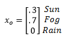
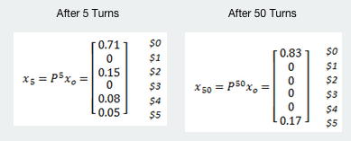

Predicting Outcomes With Markov Chains
Alex Chavez, Bryce Burnett, Daniel Tran, Katrina Lim, Tae Kim
Introduction
Markov Chains are one of the most widely used applications of Linear Algebra. It consists of a stochastic model describing a sequence of possible events in which the probability of each event depends only on the state attained in the previous event. A basic understanding of a Markov Chain consists of a current state, often compiled into a state vector c, and a stochastic matrix P, an nxn collection of probability vectors based on the number of states (n). The current state is used for the basis of the future states. The resulting Markov Chain is thus formed where c1=Pc0, c2=Pc1, … c(k+1)=Pck,where k is an integer.
In this presentation we will show how Markov Chains can be used to determine the results for a future event, and is reliable enough for many real-world processes, but may not always be the best method. Two such processes we will analyze here are weather forecasting and gambling predictions.
Objective
- Understand the nature of Markov's chain.
Methodology
WEATHER
Suppose that tomorrow's weather does not rely on any previous day's weather except today's.
Stochastic Matrix for December weather in Long Beach, CA:

Today's weather (Monday, December 2, 2013):

VEGAS
There exists a generous gambling game with probability .48 winning $1 on any turn, but .52 chance you will lose $1. It is free to play, but you must have at least $1 up to $4. You start with $1, and the game stops when you are either broke (lose) or have $5 (win).
Important questions to answer:
- Should you play?
- What is the probability you win $5 or go broke?
- How do your chances of winning change if you start with more money?
Stochastic Matrix for the generous Las Vegas machine:

What happens if you start with a dollar?

What happens if you start with $4?
Results
| Probability of Winning | ||
|---|---|---|
| Amount Gambled | $0 | $5 |
| $1 | 0.666 | 0.666 |
| $2 | 0.666 | 0.666 |
| $3 | 0.666 | 0.666 |
| $4 | 0.666 | 0.666 |
| $5 | 0.666 | 0.666 |
Conclusion
The Markov chain is a good application to predict the outcome of certain events, such as gambling, but not for all instances, such as weather. There are many factors that affect the weather: climate change, humidity, etc. It is difficult to determine the percentages of sunny, foggy, and rain on a current day, specifically finding initial probability vector. Additionally, as the chain for the weather is continued, it converges to a consistent probability which is not how weather behaves. However, gambling is a more contained system that is based on the stochastic matrix of the machine. The results show that the bid is higher, the probability to win is higher and vise-versa. Everything is predetermined by which machine is used and the amount of money by the user matching the consistent probability of 99 trials. Ultimately, it depends on the consistency of the system that allows how accurate the Markov chain can be.
Summary
The Markov chain is used to predict the outcome of events by using a stochastic matrix, based on previous data, and multiplying it to some initial data. Doing this one time will yield a probability vector that can be used to predict the next outcome. However, doing this multiple times will yield a probability vector that can predict even further, that is only accurate depending on the given system. This explains the difference between the weather and gambling example. Overall, the Markov chain has the potential of estimating the approaching result.